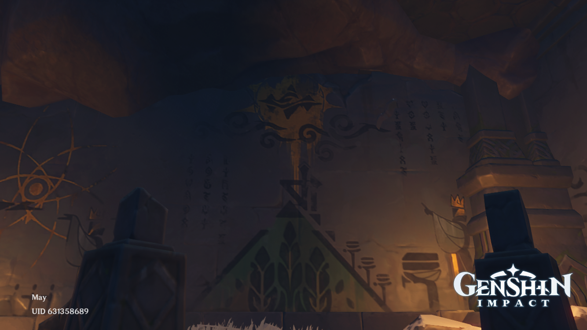
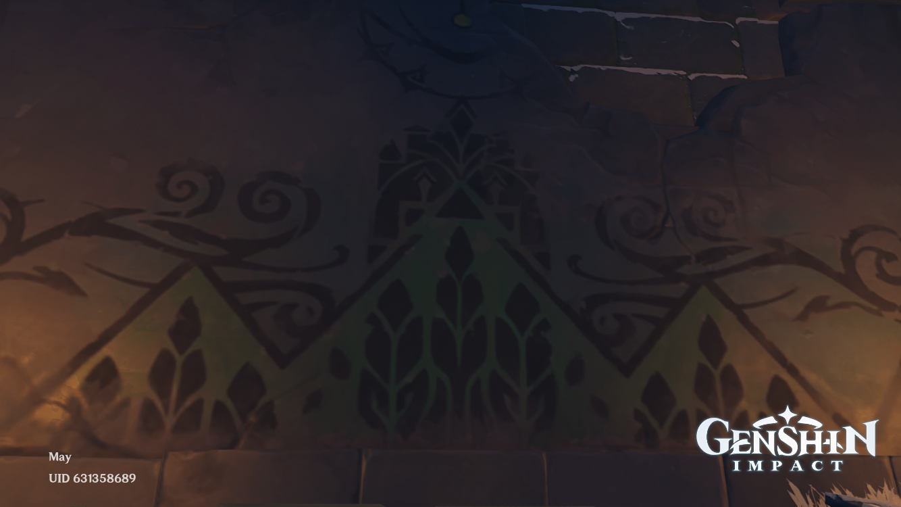
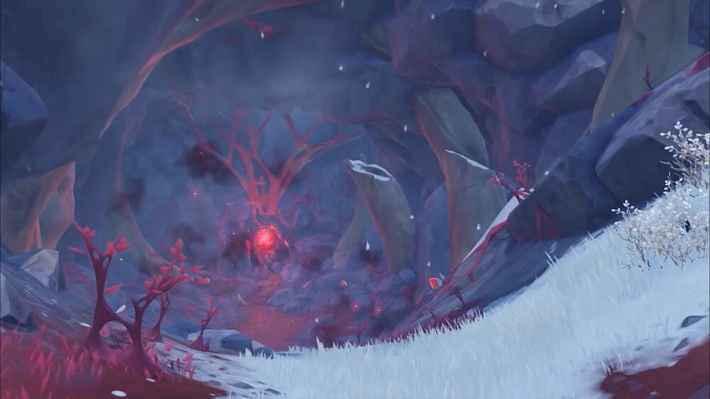

Dragonspine
What and Where is Dragonspine?
Dragonspine is a large mountain southwest of Mondstadt in the game Genshin Impact. It is the resting place of Durin, the venomous dragon who fought again Dvalin. The mountain was known as Vindagnyr prior to Durin's fall. A civilization had inhabited the mountain before Durin, as evidenced from the ruins, secret rooms, and artifacts found in Dragonspine.
Ancient Civilization

3 Boxes
The Secret Room can be opened with the Princess' Box, the Priest's Box and the Scribe's Box.
Mural Room


The Mural Room is a sealed area that can only be accessed when the traveller has read the contents of 9 acients carvings around Dragonspine. Inside the room, there are 2 murals depicting the ancient civilization.
Durin


Durin's body aws
The Skyfrost Nail


Celestia, the palace in the sky where gods reside, casted the Skyfrost Nail upon the ancient civilization as punishment for questioning the heavens' authority. The nation soon turned into a region of extreme cold.
The traviller has to restore the nail. After breaking the strang ice surrounding the nail, the nail rises from the peak and floats above Dragonspine.
More Interesting Facts
Record of Serial No.
Nine ruin guards located in Dragonspine can be interacted with. The messages they give are as follows:
- Record of Serial No. HU-16180: "3.2-..3-.23-.32-32.-3..-"
- Record of Serial No. HU-21030: "..2-223-.32-322-..3-..2-"
- Record of Serial No. HU-31122: "2.2-3..-232-223-..2-.32-"
- Record of Serial No. HU-42318: "3.2-..3-.23-3.3-..3-"
- Record of Serial No. HU-57104: ".32-32.-322-.3.-"
- Record of Serial No. GN/Hu-68513: ".3.-33.-22.-23.-..3-.23-..2-3..-"
- Record of Serial No. HU-73011: ".2.-..3-2.2-3..-.23-"
- Record of Serial No. HU-81122: "23.-.33-.32-2.2-3..-"
- Record of Serial No. HU-96917: "3.2-223-322-332-3..-233-"
The messages can be de-coded to get the following message: "ITALICS For the nation we can't forgo this skyborne power, but we failed."
The blue ice in Dragonspine is perticular in the fact that it can only be melted by picking up a Scarlet Quartz and hitting the ice while imbued with its power.
The skyfrostn Nail is one of the highest accessable points in the world on Genshin. You can see the entire continent of Teyvat from there.